The feel
Glitch art looks like a machine giving itself away. A picture slides out of line, colour bleeds into the wrong channel, one shot smears into the next.1,2 Rosa Menkman defines a glitch as a short-lived fault or break from the expected flow of a digital system, and when one hits, structures that are normally hidden come to the surface: for a moment you see the blocks the picture was stored in.3,1
It works because a failing screen is a small shock. Menkman describes the first encounter with a glitch as shock, and a damaged interface as one that leaves the viewer, for a moment, in a void of meaning.4 In games the fault can feel real: Pony Island fakes crashes and Steam messages, which its maker Daniel Mullins calls ways of "doing things they would never expect a game to do".5 The glitchcore of 2020 TikTok went the other way, into overwhelming chaos where malfunction is "less an irritating accident than a desired state".2
- corrupted
- half-decoded
- out of register
- smeared
- machine-voiced
- wrong
Where it comes from
Glitches came before glitch art. In Pac-Man (1980), the routine that draws the fruit at level 256 adds one to 255, the largest number a byte can hold, and turns the right half of the maze into a jumble of letters, numbers and symbols.6 In the early 1990s the German group Oval painted on the underside of CDs to make them skip, and in 2000 Kim Cascone described a "post-digital" music made from glitches, bugs, application errors and system crashes.7,2 JODI's SOD (1999) replaced Wolfenstein 3D's graphics with black, white and grey geometry,8 and Takeshi Murata's Monster Movie (2005) datamoshed the 1981 B movie Caveman into a kind of digital liquid.9 Rosa Menkman wrote her Glitch Studies Manifesto in 2009 and 2010, and in A Vernacular of File Formats worked through one file format after another to see how each one breaks.3,1
By 2020 glitchcore was a TikTok tag for eye-popping, glitch-edited videos set to songs like CMTEN and Glitch Gum's "NEVER MET!", and a loose name for younger hyperpop artists, with 100 gecs and Bladee as progenitors.2
Core elements
Visible compression blocks
Let the grid show. JPEG splits a picture into tiles, macroblocks that are transformed and encoded separately, and turns each 8 by 8 block into a mix of 64 DCT patterns; compressed video is built from macroblocks of about 16 by 16 pixels.1 Each block's DC value is stored as the difference from the one before, so without restart markers one bad value carries on to the end of the image.10
Shifted pixel rows
Uncompressed formats store pixels in long linear rows, and the header holds the size a viewer needs to display the picture.1 Open raw data with a slightly smaller width and the image comes out distorted; paste a chunk of data into a BMP and the lower part of the picture stays intact while the upper part shifts.1
Colour channel shifts
Colour is stored in channels, either interleaved as RGBRGBRGB or kept apart, and opening a file with the wrong channel count or order displays it distorted.1 Paste data inside a BMP and the blue values can shift into red, creating sudden discolouration.1 Glitchcore edits swap hue and saturation instead, into a psychedelic patchwork of green, cyan and magenta.2
Datamoshing and pixel sorting
Datamoshing deletes the keyframes, the only frames that hold a complete picture, and keeps the P-frames, which store only how macroblocks move from one frame to the next.1 The result is the smeared, lagging look Takeshi Murata used to melt a B movie into a kind of digital liquid.2,9 Pixel sorting streaks a still instead: Kim Asendorf's ASDF Pixel Sort (2010) sorts each run of pixels that sits on one side of a brightness or colour threshold.11
A recognisable source image
A glitch is a break from an expected flow, so it needs something that was working.3 Monster Movie starts from a recognisable B movie, and Murata punched virtual holes through the compressed file until a monster showed beneath the surface.9 Glitchcore clips start the same way, with a teenager in their bedroom, before the picture mutates.2
Fake errors and system messages
Pony Island fakes crashes, error sounds and Steam messages, and hides a demon in code that you hack your way through.5 tERRORbane gives you blue screens of death and a developer character who can't accept that his game has issues.12 Glitchcore collages borrow Windows pop-ups and clunky Word art.2
How to do it
Databend a JPEG by hand
The panel on this page is a real JPEG, so try it there first. Then copy a file you don't mind losing and open the copy in a hex editor.13 Leave the header at the top alone, scroll to about halfway, where the bulk of the image data sits, then delete, paste or overwrite a few bytes and save under a new name.13 Don't type FF: inside the image data the encoder always follows FF with 00, so a stray FF reads as the start of a marker.10
Pixel-sort a still image
Choose what starts and ends each sort: a colour threshold for pixels near white or near black, or a brightness threshold for bright or dark pixels.11 Sort only the runs of pixels on one side of the threshold, so streaks start and stop where the image crosses it; Kim Asendorf's 2010 sorter takes every pixel brighter than 127 by default.11
Datamosh a clip
Re-encode the clip as H.264 (MPEG-4 AVC) with no consecutive B-frames and a GOP of 0 to 999 frames, then close it and reopen the re-encoded copy.14 Delete some keyframes,14 so the frames after them keep moving the macroblocks of an older picture,1 or copy one P-frame and paste it over and over for the bloom, where more copies give more movement.14 Save with the video and audio copied as they are, not re-encoded.14
Write a glitch shader
Fill a small noise texture, 64 by 32 pixels, with runs of random colour, and re-roll it on 10 to 50 percent of frames as the glitch intensity rises.15 Save a copy of the screen every 13 frames and every 73 frames, and hand the shader one of those stale frames along with the noise.15
Break the interface too
Fake the failures players know from their own machines. Pony Island fakes a game crash and Steam messages to surprise players with things a game never does.5 Eternal Darkness pretends to change your volume, turn off the screen or delete your saves, and puts up a Controller Disconnected message while you are under attack.16
Glitch the audio
Let the audio fail with the picture. In the mid-1990s producers time-stretched vocals and cut drum loops down to eight bits or less, exposing the artefacts as sound in their own right.7 Glitchcore's signature is a stutter, an unsteady repetition of syllables.2
Limit flashing
Stay clear of the triggers the Game Accessibility Guidelines list: more than three flashes in a second across a quarter of the screen or more, any flashing sequence longer than five seconds, and sudden changes to or from red.17 Better still, avoid flicker wherever you can, and if some has to stay, warn players clearly and offer a way to turn it off.17
Cheat sheet
- Block size
- 8 × 8 DCT blocks; video macroblocks about 16 × 161
- Where to edit
- About halfway into the file, never the header13
- Byte to avoid
- FF, the first byte of every marker10
- Pixel sort
- Brightness threshold 12711
- Datamosh
- H.264, 0 B-frames, GOP 0 to 999 frames14
- Shader noise
- 64 × 32 blocks, re-rolled on 10 to 50% of frames15
- Flashing
- 3 a second at most across 25% of the screen; no run over 5 seconds17
Do
- Start from a picture that works, then break it. A glitch is a break from an expected flow.3
- Corrupt a real file at least once, and try more than one format: A Vernacular of File Formats shows RAW, BMP, JPEG and video each breaking differently.1
- Keep broken text half readable. Mullins made Pony Island's code hard to read but still suggestive, so players are never sure what their tampering will do.5
- If a datamosh won't bloom, try a different file, paste three P-frames at a time or remove some I-frames. The results are unpredictable.14
- Warn players before any flashing, and give them a setting to turn it off.17
Avoid
- An RGB split preset on everything. Menkman warns about easily reproducible glitch effects automated by software and plug-ins: what is now a glitch will become a fashion.3
- Constant noise. A glitch is a short-lived fault; designed and always on, it becomes what Menkman calls a filter or commodity.3,1
- Fast full-screen flashing. More than three flashes a second across a quarter of the screen can trigger seizures in people with photosensitive epilepsy.17
- Calling the off switch "epilepsy safe mode". No game can promise that; name the setting for what it changes, such as "screen flash effects".17
- Editing the header. The first bytes describe the file, and breaking them can leave a file no viewer will open.13
Tools and tutorials
- HexEd.it
A hex editor in the browser, used in the University of Pittsburgh databending exercise.13
- HxD
A free hex editor for Windows.
- ASDF Pixel Sort
Kim Asendorf's Processing script, with four sorting modes and the thresholds to play with.11
- Datamoshing using Avidemux 2.7.0
Antonio Roberts's step-by-step datamosh, from the re-encode to the P-frame bloom.14
- FFglitch
Ramiro Polla's bitstream editor for video, for scripting changes to motion vectors.
- KinoGlitch
Keijiro Takahashi's glitch effects for Unity, including the digital one in step 4.15
- PhotoMosh
Browser-based glitch effects, useful for sketching a look quickly.
- Glitch Studies Manifesto
Rosa Menkman's manifesto, with her definition of a glitch.3
- WCAG: three flashes or below
The web standard's three-flash rule, with how a flash is defined.
Palette
Decoder grey is the page itself. Everything else was sampled from the art above, and the blue from a Windows stop error.
Feel the vibe
Listen
Oval made music from CDs painted so they would skip; Kim Cascone heard in it slow-moving slabs of dense, flitting textures.7
YouTubeStudy how the rhythm and the sound break up together.
YouTubeAphex Twin is one of the mid-1990s artists Kim Cascone names for experimenting with all sorts of digital manipulation.7
YouTubeFrom Pony Island, a game of faked crashes and error sounds.5
YouTubeFrom tERRORbane, a game built on using bugs and comedy together.12
YouTubePlayed live on Adult Swim. Pitchfork names 100 gecs among the progenitors of glitchcore's music.2
YouTube
More references
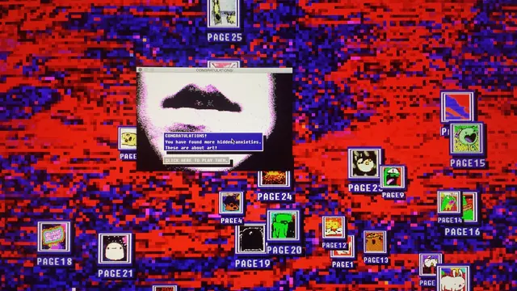
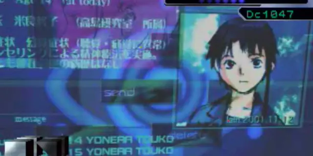
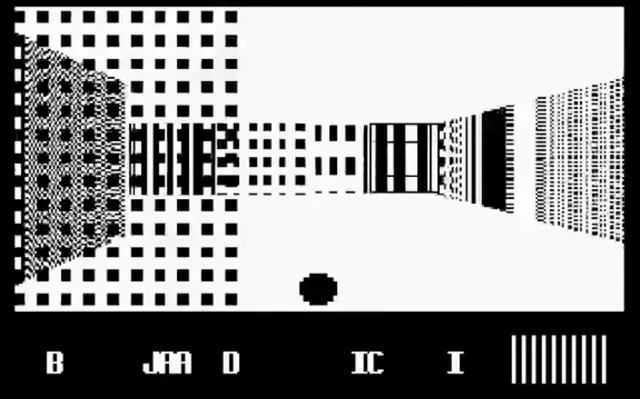
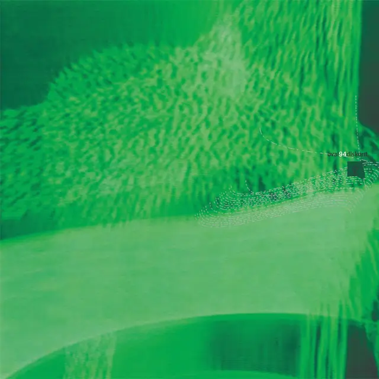
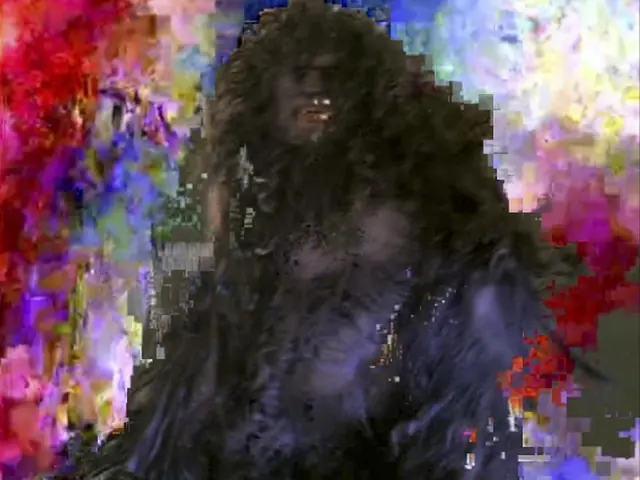
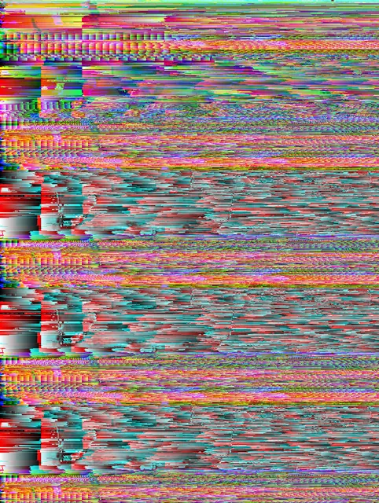
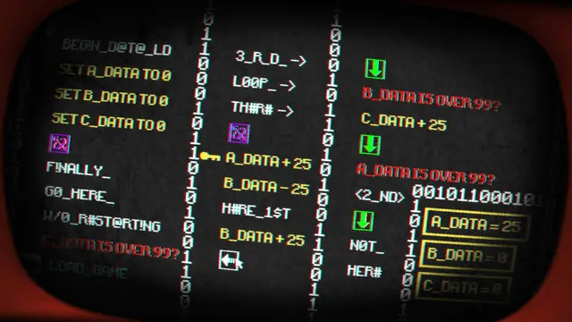
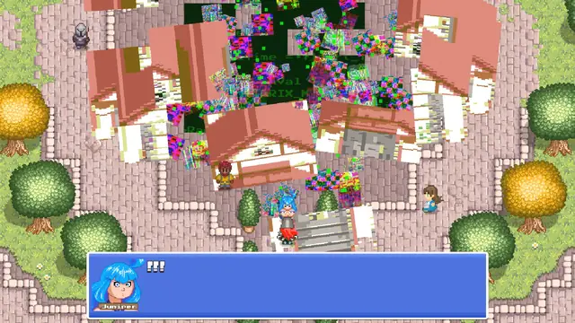
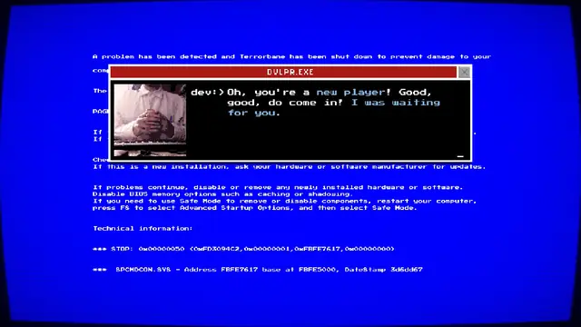
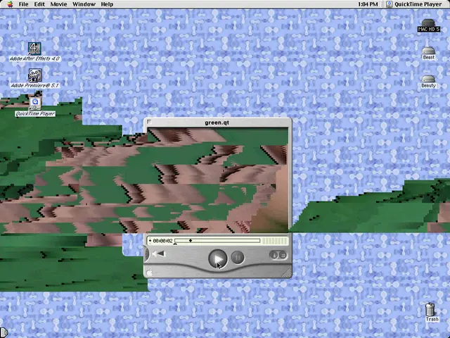
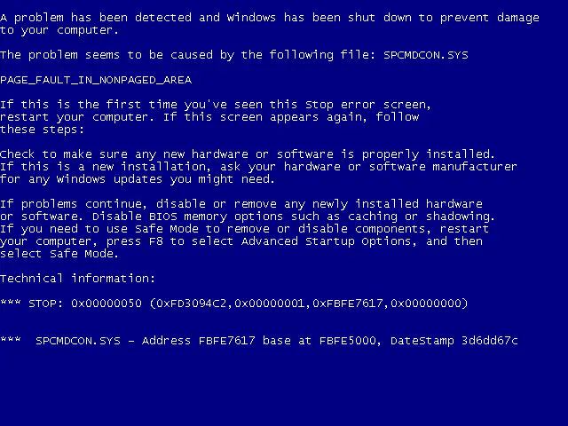
Games
- Memory of a Broken Dimension
Doom-like corridors broken into a black-and-white storm of pixelation, screen tearing and flowing compression artefacts.18
- Pony Island
A cute arcade game with a demon in its code, which you hack your way past.5
- Everything is going to be OK
Nathalie Lawhead's game. Study its rough pixels and clashing colour.
- tERRORbane
Breaking it is the point, while a developer character refuses to accept it has issues.12
Film, art and more
- A Vernacular of File Formats
Menkman's edit guide to how file formats break, from RAW and BMP to JPEG and compressed video.1
- Monster Movie
Takeshi Murata's datamosh of the 1981 B movie Caveman.9
- SOD
JODI's hack of Wolfenstein 3D, rebuilt in black, white and grey geometry.8
- 94 Diskont
An album by Oval, who made music from CDs painted so they would skip.7
- The Glitch Moment(um)
Rosa Menkman's book on glitch art: the shock of a glitch, and how it turns into a design style.4
- The Aesthetics of Failure
Kim Cascone's essay on glitch music, with a discography of starting points.7
- Serial Experiments Lain
A visual parallel. Study its wires, static and broken-up screens.
- 1000 gecs
An album by 100 gecs, whom Pitchfork names among the progenitors of glitchcore's music.2
Sources
- 1A Vernacular of File Formats: An Edit Guide for Compression Design
- 2Is Glitchcore a TikTok Aesthetic, a New Microgenre, or the Latest Iteration of Glitch Art?
- 3Glitch Studies Manifesto
- 4The Glitch Moment(um)
- 5How Pony Island teaches players to break a game
- 6The Pac-Man Dossier
- 7The Aesthetics of Failure: 'Post-Digital' Tendencies in Contemporary Computer Music
- 8SOD
- 9Monster Movie
- 10On the Security of Bitstream-level JPEG Encryption with Restart Markers
- 11ASDFPixelSort
- 12tERRORbane - Interview with BitNine Studios
- 13Glitched Image Encodings (InfoEco Cookbook exercise)
- 14Datamoshing using Avidemux 2.7.0
- 15KinoGlitch: DigitalGlitch.cs
- 16Broken Reality – The Unsettling Results of Eternal Darkness’ Sanity Effects
- 17Avoid flickering images and repetitive patterns
- 18Memory of a Broken Dimension will break your brain